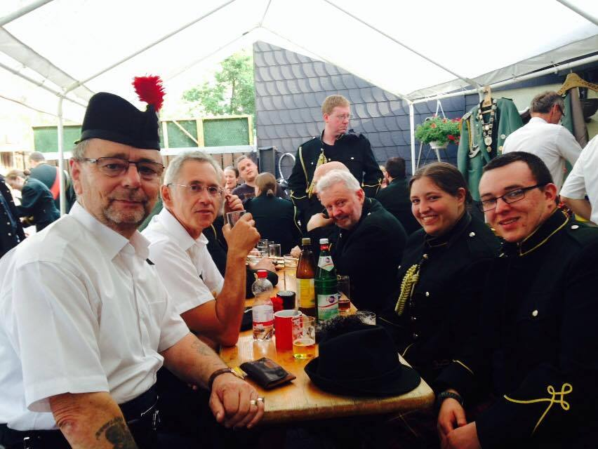
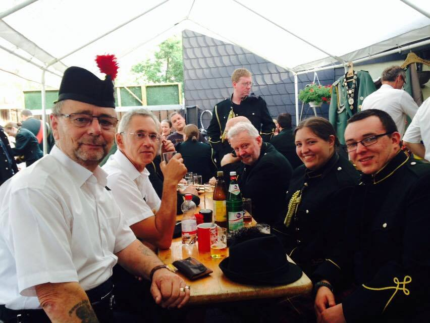

Education

PhD (Geography and Geographic Information Science, expected)
University of Illinois Urbana-Champaign
Department of Geography & Geographic Information Science | GGIS Profile
University of Illinois Urbana-Champaign
CyberGIS Center for Advanced Digital and Spatial Studies
CyberInfrastructure & Geospatial Information Laboratory

MSc (Geographic Information Science and Archaeology, 2015)
The University of Edinburgh
School of Geosciences
The University of Edinburgh

Post Baccalaureate Certificate (Classics, 2014)
University of Pennsylvania
University of Pennsylvania
Department of Classical Studies

BA (Greek and Roman Studies, 2012)
Rhodes College
Department of Ancient Mediterranean Studies
Rhodes College
Note: The Department of Ancient Mediterranean Studies was formerly known as the Department of Greek and Roman Studies
High School Diploma (2008)
Oak Hills High School
Oak Hills High School


 
